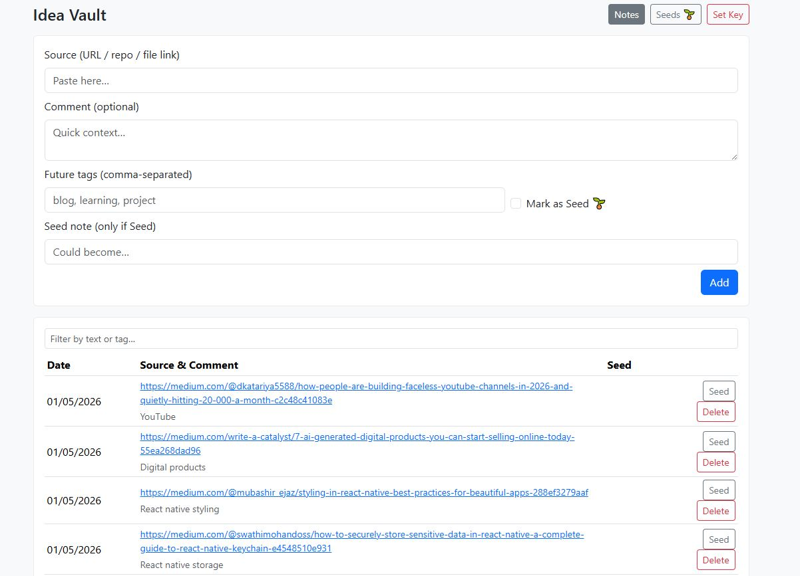
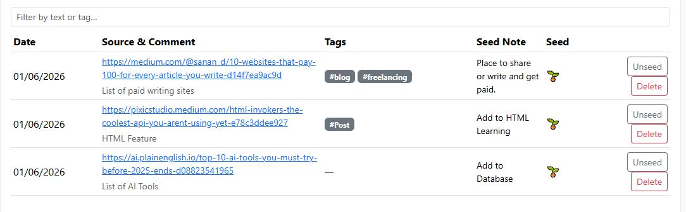

A tiny tool for a big problem
Stop losing ideas to bookmarks.
Idea Vault is a capture-first inbox for links, thoughts, and sparks — designed to turn “saved for later” into seeds you can actually use.
- Bookmarks everywhere
- Saved links with no context
- Re-finding the same articles
- Ideas that never graduate
- One capture inbox
- Each link has a comment
- Promote good ideas to seeds
- Seeds become real work
Why this exists
Most systems fail at the start — capture is too slow, too structured, or too scattered. The vault is built for the messy part: the moment something sparks.
Capture needs to be fast
Paste a link. Add one sentence. Done. That sentence is the difference between “saved” and “useful.”
Structure should be earned
You don’t tag and categorize everything. You promote the few that matter into seeds.
Ideas need a path forward
Seeds become blog posts, learning topics, projects, products — whatever your system needs next.
How it works
A simple pipeline that respects attention: collect first, curate later.
Preview
Two views. One workflow: capture → curate.


What you can use it for
Seeds are intentionally flexible — they can feed multiple lanes of work.